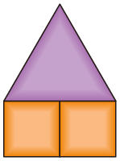
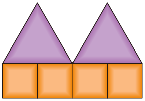
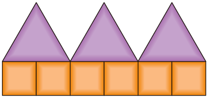
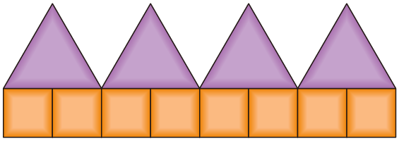
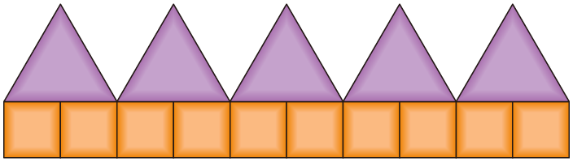
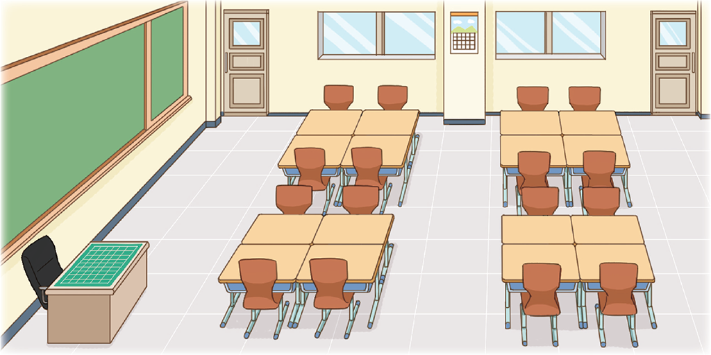

- 1~4
- 1
- 2
- 3
- 4
- 5
-
[1~4] 도형의 배열을 보고 물음에 답하세요.
 -
1 다음에 이어질 알맞은 모양을 붙여 보세요.
준비물 1 -
2 삼각형의 수와 사각형의 수 사이의 관계를 생각하며 안에 알맞은 수를 써넣으세요.
-
삼각형이 10개일 때 필요한 사각형의 수는개 입니다.20
-
삼각형이 30개일 때 필요한 사각형의 수는개 입니다.60
-
-
3 사각형이 100개일 때 삼각형은 몇 개가 필요할까요?
개50 -
4 삼각형의 수와 사각형의 수 사이의 대응 관계를 써 보세요.
예삼각형의 수를 2배 하면 사각형의 수와 같습니다.예사각형의 수를 2로 나누면 삼각형의 수와 같습니다. -
5 교실에서 대응 관계가 있는 것을 찾아 써 보세요.
예학생 책상의 수는 모둠 수의 4배입니다.예학생 의자의 수는 모둠 수의 4배입니다.예책상의 수는 의자의 수와 같습니다.